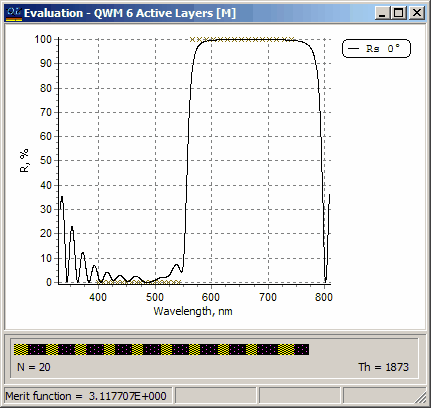

Exercise 8. Constrained optimization
Exercise 8. Constrained optimization
All layers of the short wave-pass designs in two previous examples have different thicknesses. Sometimes it may be desirable to obtain a design with quarter-wave optical thicknesses of many design layers. This can be done in a rather simple way with the help of constrained optimization.
OptiLayer provides several options for constrained optimization. This exercise demonstrates the most simple case when thicknesses of some design layers are fixed with the help of Status column in the Design Editor.
Select the Problem directory EX8. In SF Mode you need to use Import Problem Directory command (File Menu).
Load substrate GLASS, layer materials SIO2 and TIO2, target file Ef-swp mod, starting design QWM 4 Active Layers. Comparing to the starting design of the previous exercise, QWM 4 Active Layers file is slightly different. Using Modify Design option in the Synthesis menu check that it has character A in the Status column only for the first two layers and for the last two layers. This means that only 4 layer thicknesses will be changed during Refinement, all other thicknesses with the Status F will remain constant.
Choose the Newton method (Analysis and Synthesis Options dialog) and start the Refinement procedure. The resulting design will have a merit function value of 5.278055E+000. It is not surprising that the result is not as good as in the previous exercise, because only four layers were allowed to vary in the course of the refinement procedure.
Repeat this exercise using QWM 6 Active Layers starting design. Now thicknesses of six layers are allowed to vary during the refinement procedure. The improvement of the final design can be clearly seen. The merit function value is now 3.117707E+000. This result is saved with the file name EF20SW2.
